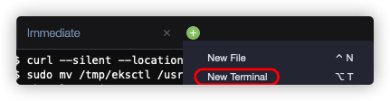
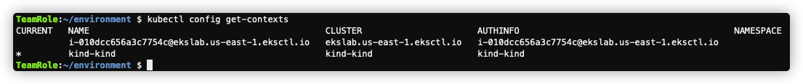
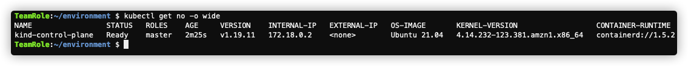
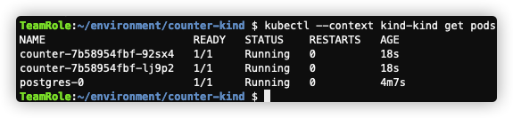
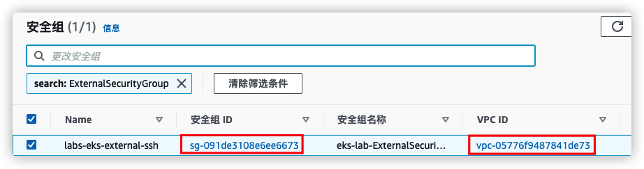
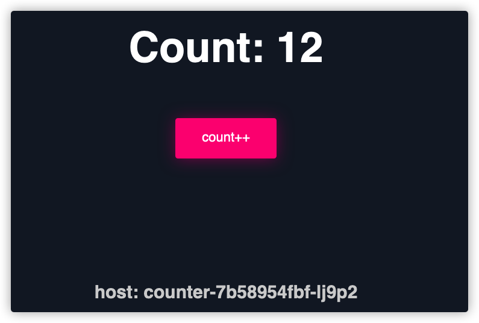

在本模块中，您将利用 Kind 工具，模拟自建一个k8s集群。
本模块实践过程中，将手动创建一些 iptables 规则，如果您重启了Cloud9实例，则需要重新跑一遍相关命令

curl -sLo kind "https://kind.sigs.k8s.io/dl/v0.11.1/kind-linux-amd64"
sudo install -o root -g root -m 0755 kind /usr/local/bin/kind
rm -f ./kind
echo 'net.ipv4.conf.all.route_localnet = 1' | sudo tee /etc/sysctl.conf
sudo sysctl -p /etc/sysctl.conf
sudo iptables -t nat -A PREROUTING -p tcp -d 169.254.170.2 --dport 80 -j DNAT --to-destination 127.0.0.1:51679
sudo iptables -t nat -A OUTPUT -d 169.254.170.2 -p tcp -m tcp --dport 80 -j REDIRECT --to-ports 51679
cat > kind.yaml <<EOF
kind: Cluster
apiVersion: kind.x-k8s.io/v1alpha4
nodes:
- role: control-plane
image: kindest/node:v1.19.11@sha256:07db187ae84b4b7de440a73886f008cf903fcf5764ba8106a9fd5243d6f32729
extraPortMappings:
- containerPort: 30000
hostPort: 30000
- containerPort: 30001
hostPort: 30001
EOF
kind create cluster --config kind.yaml
kubectl config get-contexts

以上截图 kind-kind 是默认Context。如果您是在上一步等待EKS集群创建过程中来到这一步，可能EKS集群创建尚未完成，您暂时只能看到一个Context。等EKS创建完成后，默认Context会变成ekslab
kubectl get no -o wide

kubectl config use-context "<context-name>"
例如切换到 ekslab
kubectl config use-context "i-010dcc656a3c7754c@ekslab.us-east-1.eksctl.io"
切回 kind-kind
kubectl config use-context "kind-kind"
mkdir counter-kind
cd counter-kind
cat > postgres.yaml <<EOF
---
apiVersion: v1
kind: ConfigMap
metadata:
name: postgres-config
labels:
app: postgres
data:
POSTGRES_PASSWORD: supersecret
init: |
CREATE TABLE importantdata (
id int4 PRIMARY KEY,
count int4 NOT NULL
);
INSERT INTO importantdata (id , count) VALUES (1, 0);
conf: |
wal_level=logical
wal_sender_timeout=0
listen_addresses='*'
---
kind: PersistentVolume
apiVersion: v1
metadata:
name: postgres-pv-volume
labels:
type: local
app: postgres
spec:
storageClassName: manual
capacity:
storage: 5Gi
accessModes:
- ReadWriteMany
hostPath:
path: "/mnt/data"
---
kind: PersistentVolumeClaim
apiVersion: v1
metadata:
name: postgres-pv-claim
labels:
app: postgres
spec:
storageClassName: manual
accessModes:
- ReadWriteMany
resources:
requests:
storage: 5Gi
---
apiVersion: apps/v1
kind: StatefulSet
metadata:
name: postgres
spec:
replicas: 1
serviceName: postgres
selector:
matchLabels:
app: postgres
template:
metadata:
labels:
app: postgres
spec:
terminationGracePeriodSeconds: 5
containers:
- name: postgres
image: postgres:13
imagePullPolicy: "IfNotPresent"
ports:
- containerPort: 5432
envFrom:
- configMapRef:
name: postgres-config
volumeMounts:
- mountPath: /var/lib/postgresql/data
name: postgredb
- mountPath: /docker-entrypoint-initdb.d
name: init
- name: postgresql-conf
mountPath: /etc/postgresql
args: ["-c", "config_file=/etc/postgresql/postgresql.conf"]
resources:
requests:
memory: "64Mi"
cpu: "250m"
limits:
memory: "128Mi"
cpu: "500m"
volumes:
- name: postgredb
persistentVolumeClaim:
claimName: postgres-pv-claim
- name: init
configMap:
name: postgres-config
items:
- key: init
path: init.sql
- name: postgresql-conf
configMap:
name: postgres-config
items:
- key: conf
path: postgresql.conf
---
apiVersion: v1
kind: Service
metadata:
name: postgres
labels:
app: postgres
spec:
type: ClusterIP
ports:
- port: 5432
selector:
app: postgres
EOF
kubectl --context kind-kind apply -f postgres.yaml
cat > counter.yaml <<EOF
---
apiVersion: apps/v1
kind: Deployment
metadata:
name: counter
labels:
app: counter
spec:
replicas: 2
selector:
matchLabels:
app: counter
template:
metadata:
labels:
app: counter
spec:
containers:
- name: counter
image: public.ecr.aws/jg/counter:latest
ports:
- containerPort: 8000
resources:
requests:
memory: "16Mi"
cpu: "100m"
limits:
memory: "128Mi"
cpu: "500m"
---
apiVersion: v1
kind: Service
metadata:
name: counter-service
spec:
type: NodePort
selector:
app: counter
ports:
- port: 8000
name: http
nodePort: 30000
EOF
kubectl --context kind-kind apply -f counter.yaml
kubectl --context kind-kind get pods

ExternalSecurityGroup 记录安全组 Id 和 VPC Id
注意替换 VpcId 和 ExternalSecurityGroupId
export VPC_ID=vpc-05776f9487841de73
export EXTERNAL_SECURITY_GROUP=sg-091de3108e6ee6673
export C9_INSTANCE_ID=$(curl -s http://169.254.169.254/latest/meta-data/instance-id)
export ALB_ARN=$(aws elbv2 create-load-balancer \
--name counter \
--subnets $(aws ec2 describe-subnets \
--filters "Name=vpc-id,Values=$VPC_ID" "Name=tag:kubernetes.io/role/elb,Values=1" \
--query 'Subnets[*].SubnetId' \
--output text) \
--type application --security-groups $EXTERNAL_SECURITY_GROUP \
--query 'LoadBalancers[0].LoadBalancerArn' \
--output text)
export TG_ARN=$(aws elbv2 create-target-group \
--name counter-target --protocol HTTP \
--port 30000 --target-type instance \
--vpc-id ${VPC_ID} --query 'TargetGroups[0].TargetGroupArn' \
--output text)
aws elbv2 register-targets \
--target-group-arn ${TG_ARN} \
--targets Id=${C9_INSTANCE_ID}
aws elbv2 wait load-balancer-available \
--load-balancer-arns $ALB_ARN \
&& export ALB_LISTENER=$(aws elbv2 create-listener \
--load-balancer-arn ${ALB_ARN} \
--port 80 --protocol HTTP \
--default-actions Type=forward,TargetGroupArn=${TG_ARN} \
--query 'Listeners[0].ListenerArn' \
--output text)
需要等待大约2分钟（依赖ALB 创建完成，状态变为可用）
echo "http://"$(aws elbv2 describe-load-balancers \
--load-balancer-arns $ALB_ARN \
--query 'LoadBalancers[0].DNSName' --output text)
